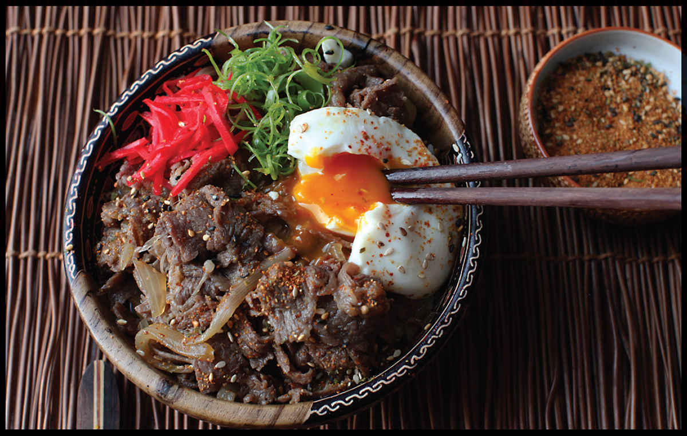

GYUDON
Yield Serves 2 |
Active Time 15 minutes Total Time 15 minutes |
This recipe can be doubled. If doubling, prepare it in a wok instead of a saucepan. Hondashi is powdered dashi that can be found at any Japanese market and most well-stocked supermarkets. You can use ½ cup concentrated tsuyu (here) diluted with a cup of water in place of the dashi, soy sauce, sake, mirin, and sugar. Look for thinly shaved beef at Japanese markets, ask your butcher to shave it for you, or use frozen shaved steak intended for Philly cheesesteaks. The beef can be cooked directly from the freezer if using frozen; just add a few minutes to the cooking time and make sure to carefully stir the beef and break it apart as it thaws. Beni-shoga is bright red pickled hot ginger. Togarashi is Japanese chile powder, which comes in both ichimi (chiles only) and shichimi (chiles blended with other dried aromatics) versions. Either will work in this dish. All of these ingredients can be found at any Japanese market or well-stocked Western supermarket.
Instead of topping the bowls with poached eggs, you can also use fried eggs or drizzle the eggs into the simmering beef as in oyakodon (see step 2 in the oyakodon recipe on here).
INGREDIENTS
¾ cup (180 ml) homemade dashi (here) or the equivalent in Hondashi (see Notes)
1 tablespoon (15 ml) shoyu plus more to taste
2 tablespoons (30 ml) dry sake
2 tablespoons (30 ml) mirin
1 tablespoon (15 g) sugar, plus more to taste
1 large onion, slivered (about 6 ounces/170 g)
12 ounces (340 g) thinly shaved beef rib eye or chuck steak (see Notes)
1 teaspoon (5 ml) grated fresh ginger
Kosher salt
To Serve:
2 to 3 cups hot rice in individual serving bowls
2 poached large eggs (optional; see Notes)
Sliced scallions
Beni-shoga (see Notes)
Togarashi (see Notes)
DIRECTIONS
1 Combine the dashi, soy sauce, sake, mirin, and sugar in a medium skillet and bring to a simmer over medium heat. Add the onion and simmer until half tender, about 5 minutes.
2 Add the beef and cook, stirring, until the beef is cooked through and the liquid has reduced to an intensely flavored broth, about 5 minutes. Stir in the ginger and simmer for 1 minute longer. Adjust the seasoning with salt and sugar to taste.
3 Top the rice bowls with the beef and sauce mixture. Garnish each bowl with a poached egg (if using), sliced scallions, beni-shoga, and togarashi. Serve immediately.
